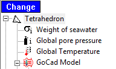
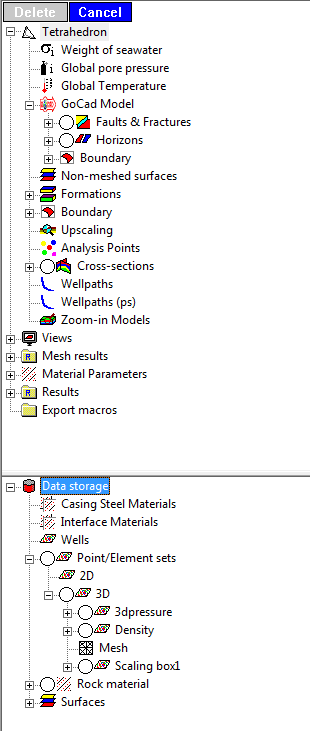
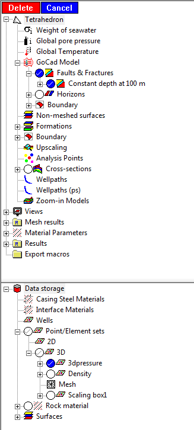

Multiple delete can be activated by pressing the "Change" button above the GEOMEC Tree.

At several places in the tree, round select boxes appear, allowing you to select and deselect subtrees and tree items.

Once one or more items are selected, the "Delete" button turns red, and pressing it will delete the selected items.
Note that you will not be prompted for confirmation, and that the deletion cannot be undone.